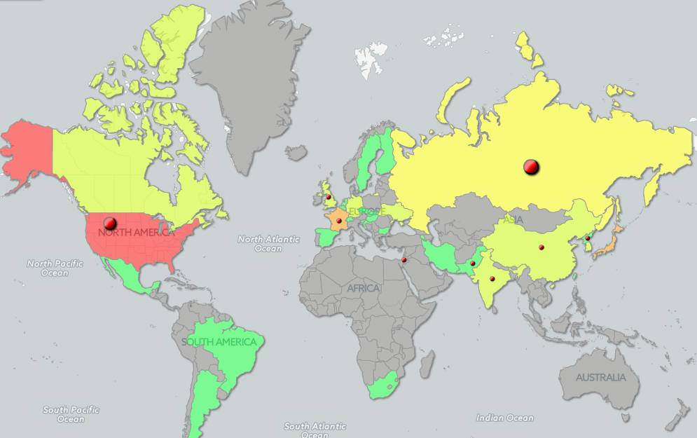
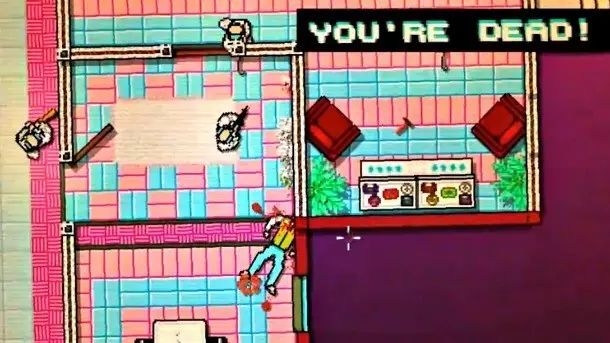
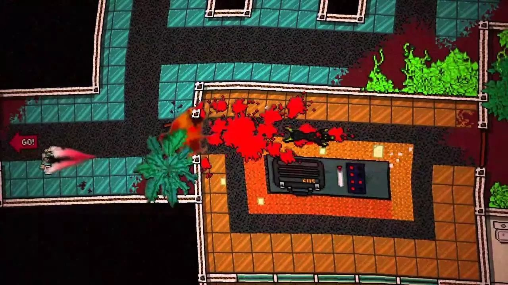
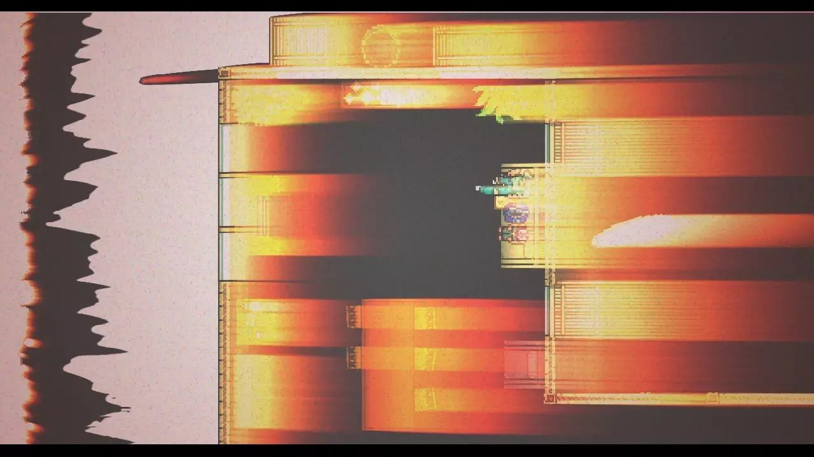

热线迈阿密玩后感
Contents

最后一天，不想写年终总结了。2016是特殊的一年，要总结的太多以至于没什么值得总结的。我想最后一天不如写点平时不写的内容。比如，我们今天聊聊游戏。
做为一个买游戏不少，玩游戏很少的人，2016年只有一个游戏让我真正受到了震撼，它叫《迈阿密热线》。这种震撼来自很多角度，从艺术风格到游戏形式，从内容到开发者，每一项都给了我足够的震撼。我不是职业玩家也不是职业游戏评论人，这个游戏是2015年的，也不是2016的新游戏。但我还是想写写我的感受。
一开始被这个游戏吸引是因为无意间看到了他们网站首页的这张动图，顿时觉得太酷了，就趁着某次steam打折把1、2两部一块买了。

from: http://hotlinemiami.com 官网首页
然而没想到游戏是这样风格的。

一开始完全玩不下去，一方面是画面实在太粗糙了，另外一方面是这个游戏难度高的离奇，没有血条，没有几条命之类的设置，被敌人一棍子打中就直接死掉了。然而坚持玩了一个小时之后，神奇的效果出现了，这种极其粗糙的画面被大脑自动修补成了非常真实的场面。游戏技巧也稍微掌握了一些，不是那么容易死掉，多少能顺利打下去了。如果你看过电影《杀死比尔》的话，大概可以想象出那种感觉，整个游戏过程就像电影里面用武士刀一顿砍杀那段一样，流畅，血腥，残酷…尽管实际上屏幕上的画面仍然是粗糙的8bit，但是粗糙留下的大量留白全都被大脑填充上了。
到后来我已经爱上了这种风格，并且坚定的认为这种风格是这个游戏必不可少的，因为如果画面真的如电影一样完全真实，这种血腥场面很快就会让人受不了，不可能持续玩下去。这种粗糙恰好把真实和想象控制在一个合适的范围内，你可以感受到很多东西，但不至于真实到无法接受。
这些年，画面简陋的游戏开始逐渐被人们接受。我想很大原因是追求效果真实已经如同军备竞赛一样，只有大公司烧的起，小团队进入的门槛都碰不到。于是很多人干脆彻底放弃画面，把成本用在其他地方。游戏项目也是一种项目，它和软件开发一样，无法完美，永远受制于时间和成本，只能把手里的资源做取舍之后分配。如果让我选出这个游戏最出色的部分，我想应该是“手感”。它简陋的画面之下，是非常细致优化过的手感。游戏里面有很多种武器，从拳头到重机枪，有诸多选择，每一种武器用起来的感觉都有很大差别，甚至连钢管和棒球棍这样非常相似的武器都有细微的速度区别。游戏中还偶尔出现一些不常用的武器，比如台球杆，它的手感和钢管也完全不同。如果你在现实生活中拿台球杆挥动过，当你在游戏按动鼠标，挥动台球杆的时候，就会真的感觉到那种惯性和速度。而这一切只是在2D的游戏中实现的。
网上有不少关于这个游戏的A+评价视频，在里面可以看到玩家拿着自己喜欢的武器，如旋风一样迅速横扫整个楼层，干掉画面上所有敌人而自己毫无无伤，经过脑补细节之后，这就是电影一样的场面。这时候你会惊讶于这个游戏的弹性空间之大，随着熟练度的提高，它对于不同熟练程度的玩家提供了完全不同的感受，这不是所谓“开放世界”类的游戏，但展现了另外一种开放。
后来，我想起来这些年之所以我很少有认真玩下去的游戏，有一个重要原因是这个时代的游戏开始玩的门槛都太高了。要先学一个漫长的教程，然后才能真正开始玩。游戏设计者生怕玩家一开始就死掉放弃，非要给你一个逐渐过度的过程。但实际上玩游戏唯一不怕的就是死亡，这才是仅有的在游戏世界中可以做，在现实生活中没法反复做的事情。
因为它太简单，甚至可以完全跳过剧情一路打打杀杀到结束。热线迈阿密也遭到了无数恶评，被很多人当作戴着各种动物面具无脑杀戮的血腥游戏。但实际上它的剧情也一样出色，只是为了营造氛围故意表现的支离破碎。下面我的描述会剧透故事，不过这无所谓，剧透对它的游戏性毫无影响，何况大部分人恐怕也不会和我一样真正把两部游戏都打完又去读了官方漫画。
它讲述了一个架空历史的平行世界中的故事，时间从冷战时代开始分叉，苏联没有解体，冷战最终变成了核战。第2部的结局是迈阿密被核弹击中，所有人都死了。这个故事以错综复杂的人物关系和颠倒的时间线展开，其中混杂了战争带来的创伤后应激障碍、梦境、错误的自我认知带来的想象以及致幻剂带来幻觉。一个完整的故事被这些因素搞得支离破碎，分不清是真实还是幻觉，这是一种少见的表现形式，它带来了两种截然不同的玩家反馈，一部分人压根懒得去理解它，一部分人则为止彻底着迷，反复去玩，挖掘游戏里面的任何微小的线索来挖掘剧情。
整个游戏有很多让我赞叹的地方，虽然是2D游戏，但它用了很多非常特殊的表现手法，气氛十足。第1部有一关是主角从医院逃出，整个画面用扭曲和偶尔暂停的方式来表现人物的虚弱无力和头晕目眩感。第2部这种表现手法又进一步发挥了，在控制苏联黑帮老大的那一关，最后一幕是他吃了过量的致幻剂之后的场面，游戏画面变得扭曲又色彩斑斓，所有常见的东西都变得不一样，周围人变成了各种怪物，戴着面具杀进苏联黑帮总部的“粉丝团”成员幻化成了各种怪兽，霰弹枪吐出的子弹拖着长尾巴，打中目标之后爆裂的血花，所有效果都太迷幻了。杀掉全部敌人之后，他面前出现了金色的栅栏门后面的彩虹桥，走上去之后，这段剧情结束了。而实际上是他在楼顶直升机停机坪上干掉最后一个敌人之后从楼上跳下去了。在游戏的另外几个关卡会从粉丝团成员的角度重新体验这段剧情，两边一拼，玩家从上帝视角可以明白发生了什么。

在我们生活的这个时空中，冷战结束，人类经历了少见的和平时期。核战争听起来已经像个遥远的传说，像我所在的渥太华，冷战时期修建的巨大的防核弹防空堡垒早已变成了冷战博物馆供人们随意参观。然而在最近这一个月，核武器这个词突然变成了各大新闻的热门词，俄罗斯总统普京说要增强核力量，美国候任总统川普说要继续扩充美国核武器，尽管他们任何一方的现存核武器已经足够摧毁地球几次…小国们也没落后，朝鲜，伊朗，巴基斯坦…都在叫喊着核力量。全球性核战争未必会爆发，但在局部地区使用核武器不再是完全不可能的事了。这个时代恰好是适合玩这个游戏的时候，人们应该体验一下游戏结尾铺面而来的核爆烈焰，直至一切变成一道白光，哪怕它只有8bit，也足够震撼了。

游戏开发者是瑞典人，这个时代似乎只有在这种高福利国家，人们才能轻松的做出来只为自我表达的游戏。这让我想起来另外一个小众又火爆的游戏，FTL:Faster Than Light，这是两个在上海的外国人开发的游戏。他们也说，做真正好的游戏应该在生活成本低的地方（虽然我觉得上海已经算是生活成本非常高的地方了）。回想很多年前，《质量效应》这样伟大的游戏出自寒冷的加拿大中部城市埃德蒙顿而不是美国，但今天的各种产业都从散落各地变成了集中在几个中心。也许未来的几年里面，我们会看到一切都快速的颠覆，很多东西都会和过去的认知完全不同。希望将来回想起来2016年的时候，我们只会认为它是一个不怎么好的年头，而不是坏时代的开始。
另外一个好玩的小花絮。澳洲分级部门拒绝给迈阿密热线评级，导致它没法上市，开发团队给澳洲玩家回信的时候说，“如果最后没法上市，你们去玩盗版就可以了，不用付钱给我，玩开心就好。” 这简直太酷了，瑞典不愧是诞生了海盗党的国家。
最后，祝各位读者新年快乐，无论下一年是什么样，开心还是最重要的。
对了，如果你实在懒得玩游戏但是又对剧情和人物有兴趣，阅读原文我链接了一篇玩家整理的时间线，在steam，但是是中文的。游戏貌似也有中文包，我看到过中文的截图，不过我没试过，有兴趣可以自己研究研究。
参考备注：
- 标题图：世界核武器部署列表，来自 http://www.targetmap.com
- 游戏1+2在steam的地址 http://store.steampowered.com/sub/56930/
- 官方漫画是免费的： http://store.steampowered.com/app/341190/
- 游戏截图基本都是从steam抓出来的。
Author Huo Ju
LastMod 2016-12-30